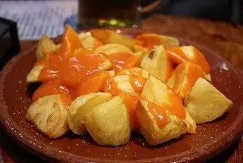
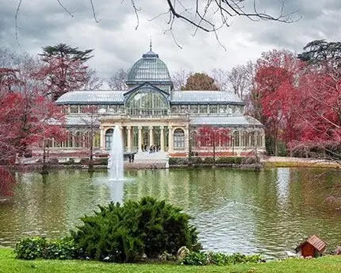

DANI'S PICK
Patatas bravas
Madrid comfort food at its best.
MADRID, THE DANI WAY
The places I genuinely recommend for great food, memorable drinks and a proper taste of the city.
01
COME HUNGRY

DANI'S PICK
Madrid comfort food at its best.
Paella
Los Arroces de Segis ↗Authentic paella recipes and other rice dishes.
La Barraca ↗A Madrid classic in the city centre.
Patatas bravas
Las Bravas ↗Home of the famous secret sauce.
Docamar ↗A little outside the centre, but my favourite in Madrid.
Cocido madrileño
Restaurante La Bola ↗A Madrid institution for the city's slow-cooked chickpea stew.
My favourite bakery
PANOD ↗Homemade pastries and sweets. Don't leave without trying my favourite: the cheesecake croissant.
02
AFTER DARK
Speakeasy bars
Fat Cats ↗The entrance looks like a jewellery shop.
Salmon Guru ↗Creative cocktails and one of Madrid's liveliest rooms.
Rooftops
RIU Hotel rooftop ↗For the height and panoramic views.
Bulan Fit Experience ↗A rooftop hidden above a gym.
Círculo de Bellas Artes ↗Classic Madrid charm.
Salvador Bachiller secret garden ↗Enter the shop, take the lift to the top floor and keep the secret.
03
DON'T MISS

SLOW MADRID
THANK YOU FOR JOINING ME
Your review helps other travellers find the tour — and it means a lot to me.
Share your experience ↗ Download the original PDF ↓